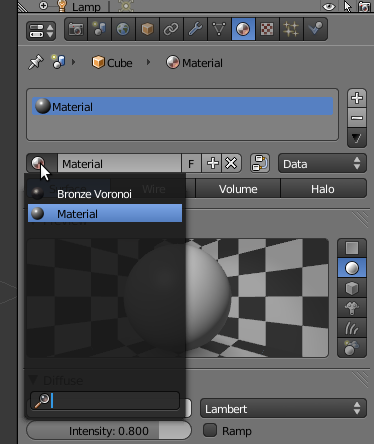
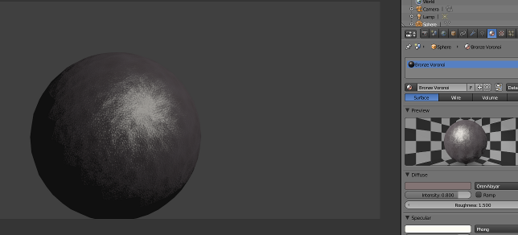

Esta possibilidade funciona tanto em Blender Internal Render como em Cycles com materiais para BIR e Cycles, respetivamente. O importante é verificar se o material está preparado para BIR ou Cycles.
A esta altura, já terá experimentado a ferramenta “Append/Link” para introduzir objectos criados previamente num novo ficheiro .blend. Utilizando a mesma funcionalidade, é possível inserir materiais.
1- Comece por criar uma cena limpa de objectos. Clique em “Delete” (ou X) para apagar o cubo. Insira uma esfera. Em Object Mode, clique no botão Smooth (painel de ferramentas).
2- Visite o website BlendSwap.com e faça download de um ficheiro .blend com um material. No exemplo abaixo iremos utilizar um material com o nome Bronze Voronoi.
3- De volta ao Blender, vá ao menu File e escolha a opção Append. Navegue até ao ficheiro que descarregou, seleccione a pasta Material. Seleccione o Material e clique no botão Link/Append from Library.
4- Seleccione a sua esfera e vá até ao painel Material. O material importado deverá surgir agora na sua lista. Seleccione o material Bronze Voronoi para aplicar o mesmo na sua esfera.
5- Renderize...
